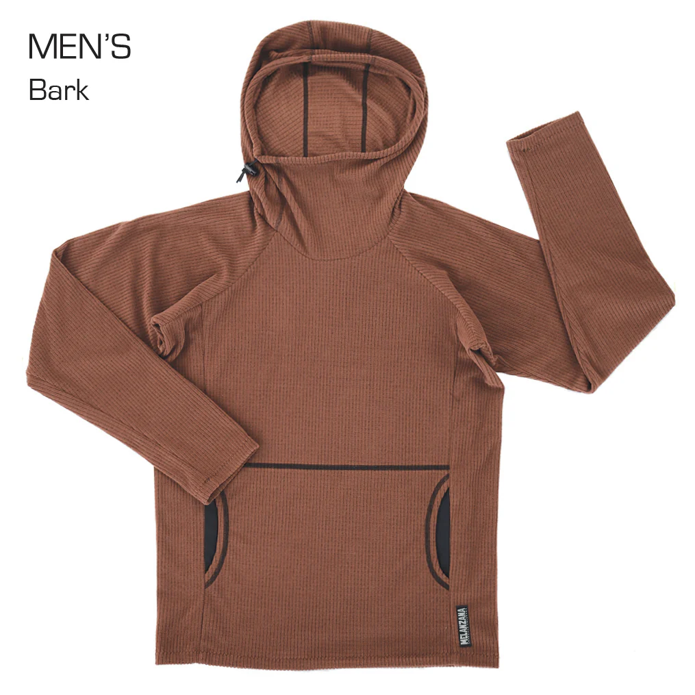

On the surface, the Melly is simple: a soft, breathable grid-fleece hoodie with a kangaroo pocket, a distinct high-reaching gaiter-style neckline that cinches tight around the face, and the kind of loose, slightly boxy fit that makes it easy to layer and incredibly hard to take off. It is useful, lightweight, packable, and comfortable.
But usefulness alone does not explain the cult.
A Melly is the kind of thing you pack even when it is not technically the best layer for the trip. It is the adventurer's equivalent of a childhood blanket: familiar, trusted, slightly irrational, and absolutely coming with you.
The first time I noticed one, no one explained the fabric technology. I noticed because the right people were wearing them. At an outdoor leader training in 2019, Mellys appeared on the bodies of people who looked like they knew exactly how to pitch a tent in a torrential downpour. They were the seasoned outdoor veterans who felt entirely out of your league, yet instantly warm and welcoming the second you approached them.
I remember watching them and thinking: What is this club I didn't know I wasn't in?
Before I even knew what the hoodie was, I knew what it meant. Melanzana didn't just make a product; it attached itself to a community's idea of credibility.
The Product is the Receipt
To get a Melly, you usually have to go to Leadville, Colorado. Not REI. Not an online checkout. Leadville.
The in-store experience is appointment-based, featuring long waits and strict purchase limits. That changes the item's meaning. The act of getting a Melly becomes part of the fleece itself.
A Patagonia fleece says, “I like the outdoors.” A Melly says, “I have a story to tell you.”
Whether you drove through the Rockies on a cross-country road trip, waited months for an appointment, or paid an embarrassing amount secondhand, the hoodie becomes a receipt from an experience and a conduit for many more.

Scarcity as a Byproduct, Not a Stunt
The lazy read is that a Melly is desirable simply because it is hard to get. But artificial scarcity feels manipulative. A brand shouting about a “limited drop” every week isn't building mystique; it's begging for urgency.
Melanzana's scarcity feels different because it is tied to its actual operating philosophy: make things locally, protect quality, and resist overextension. Founder Fritz Howard has noted that growth limits are about sustainability and local production, not manufacturing hype.
The scarcity feels earned because it is tied to constraints people respect. It is rare because the brand refuses to betray the conditions that made people love it in the first place.
Scarcity works when it feels earned, not engineered.
Selling Recognition, Not Just Taste
The real magic happens when two of these hoodies cross paths in the wild.
On a hike in Jotunheimen National Park in Norway, I was standing on the rugged summit of Bitihorn, surrounded entirely by Norwegian conversation, when a sudden burst of English caught my attention. From about 100 feet away, a stranger called out: “Nice Melly!”
I looked up, and lo and behold, he was wearing the exact same grid fleece. In the middle of nowhere, we instantly exchanged the classic ritual: recognition, a quick story of how we got them, a nod, and goodbye.
That moment is the brand.
The hoodie acted as a social password, creating an instant shortcut between two strangers. It told us we cared about the same things, had been to the same kinds of places, and were, at minimum, both ridiculous enough to care this much about a microfleece.
Melanzana did not just create a hoodie people can wear. It created a hoodie people greet.
“Nice Melly” is not small talk. It is recognition.
What Other Brands Can Learn
The Melly is a fleece, but the mechanics behind it apply far beyond outdoor apparel.
Give people something to recognize each other by
The strongest niche brands create visible signals, not just good products.
Let the product carry a story
The place, wait, ritual, or friction can become part of the product's value.
Make scarcity feel principled, not manufactured
People respect limits when they are tied to quality, community, or values.
Serve a specific world before trying to reach everyone
Broad appeal usually starts with deep meaning for a small group.
The Password
A brand becomes powerful when the product is not the end of a transaction, but the beginning of recognition.
“Nice Melly” is not a compliment.
It is a password.